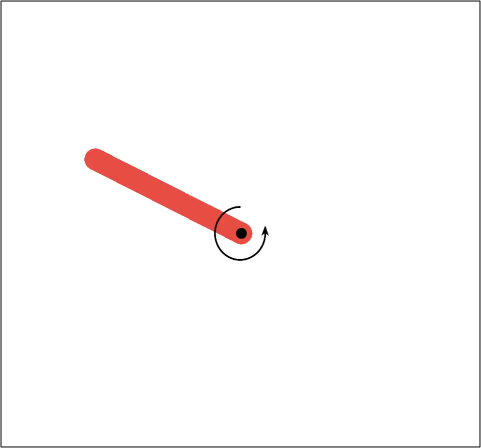
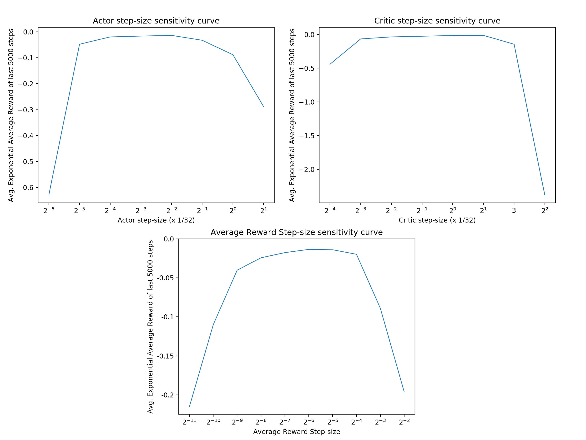

Assignment 4 - Average Reward Softmax Actor-Critic
Welcome to your Course 3 Programming Assignment 4. In this assignment, you will implement Average Reward Softmax Actor-Critic in the Pendulum Swing-Up problem that you have seen earlier in the lecture. Through this assignment you will get hands-on experience in implementing actor-critic methods on a continuing task.
In this assignment, you will:
1. Implement softmax actor-critic agent on a continuing task using the average reward formulation.
2. Understand how to parameterize the policy as a function to learn, in a discrete action environment.
3. Understand how to (approximately) sample the gradient of this objective to update the actor.
4. Understand how to update the critic using differential TD error.
Pendulum Swing-Up Environment
In this assignment, we will be using a Pendulum environment, adapted from Santamaría et al. (1998). This is also the same environment that we used in the lecture. The diagram below illustrates the environment.

The environment consists of single pendulum that can swing 360 degrees. The pendulum is actuated by applying a torque on its pivot point. The goal is to get the pendulum to balance up-right from its resting position (hanging down at the bottom with no velocity) and maintain it as long as possible. The pendulum can move freely, subject only to gravity and the action applied by the agent.
The state is 2-dimensional, which consists of the current angle $\beta \in [-\pi, \pi]$ (angle from the vertical upright position) and current angular velocity $\dot{\beta} \in (-2\pi, 2\pi)$. The angular velocity is constrained in order to avoid damaging the pendulum system. If the angular velocity reaches this limit during simulation, the pendulum is reset to the resting position.
The action is the angular acceleration, with discrete values $a \in \{-1, 0, 1\}$ applied to the pendulum.
For more details on environment dynamics you can refer to the original paper.
The goal is to swing-up the pendulum and maintain its upright angle. Hence, the reward is the negative absolute angle from the vertical position: $R_{t} = -|\beta_{t}|$
Furthermore, since the goal is to reach and maintain a vertical position, there are no terminations nor episodes. Thus this problem can be formulated as a continuing task.
Similar to the Mountain Car task, the action in this pendulum environment is not strong enough to move the pendulum directly to the desired position. The agent must learn to first move the pendulum away from its desired position and gain enough momentum to successfully swing-up the pendulum. And even after reaching the upright position the agent must learn to continually balance the pendulum in this unstable position.
Packages
You will use the following packages in this assignment.
- numpy : Fundamental package for scientific computing with Python.
- matplotlib : Library for plotting graphs in Python.
- RL-Glue : Library for reinforcement learning experiments.
- jdc : Jupyter magic that allows defining classes over multiple jupyter notebook cells.
- tqdm : A package to display progress bar when running experiments
- plot_script : custom script to plot results
- tiles3 : A package that implements tile-coding.
- pendulum_env : Pendulum Swing-up Environment
Please do not import other libraries — this will break the autograder.
1 | # Do not modify this cell! |
Section 1: Create Tile Coding Helper Function
In this section, we are going to build a tile coding class for our agent that will make it easier to make calls to our tile coder.
Tile-coding is introduced in Section 9.5.4 of the textbook as a way to create features that can both provide good generalization and discrimination. We have already used it in our last programming assignment as well.
Similar to the last programming assignment, we are going to make a function specific for tile coding for our Pendulum Swing-up environment. We will also use the Tiles3 library.
To get the tile coder working we need to:
1) create an index hash table using tc.IHT(),
2) scale the inputs for the tile coder based on number of tiles and range of values each input could take
3) call tc.tileswrap to get active tiles back.
However, we need to make one small change to this tile coder.
Note that in this environment the state space contains angle, which is between $[-\pi, \pi]$. If we tile-code this state space in the usual way, the agent may think the value of states corresponding to an angle of $-\pi$ is very different from angle of $\pi$ when in fact they are the same! To remedy this and allow generalization between angle $= -\pi$ and angle $= \pi$, we need to use wrap tile coder.
The usage of wrap tile coder is almost identical to the original tile coder, except that we also need to provide the wrapwidth argument for the dimension we want to wrap over (hence only for angle, and None for angular velocity). More details of wrap tile coder is also provided in Tiles3 library.
1 | # ----------- |
Run the following code to verify PendulumTilecoder
1 | # ----------- |
Section 2: Create Average Reward Softmax Actor-Critic Agent
Now that we implemented PendulumTileCoder let’s create the agent that interacts with the environment. We will implement the same average reward Actor-Critic algorithm presented in the videos.
This agent has two components: an Actor and a Critic. The Actor learns a parameterized policy while the Critic learns a state-value function. The environment has discrete actions; your Actor implementation will use a softmax policy with exponentiated action-preferences. The Actor learns with the sample-based estimate for the gradient of the average reward objective. The Critic learns using the average reward version of the semi-gradient TD(0) algorithm.
In this section, you will be implementing agent_policy, agent_start, agent_step, and agent_end.
Section 2-1: Implement Helper Functions
Let’s first define a couple of useful helper functions.
Section 2-1a: Compute Softmax Probability
In this part you will implement compute_softmax_prob.
This function computes softmax probability for all actions, given actor weights actor_w and active tiles tiles. This function will be later used in agent_policy to sample appropriate action.
First, recall how the softmax policy is represented from state-action preferences: $\large \pi(a|s, \mathbf{\theta}) \doteq \frac{e^{h(s,a,\mathbf{\theta})}}{\sum_{b}e^{h(s,b,\mathbf{\theta})}}$.
state-action preference is defined as $h(s,a, \mathbf{\theta}) \doteq \mathbf{\theta}^T \mathbf{x}_h(s,a)$.
Given active tiles tiles for state s, state-action preference $\mathbf{\theta}^T \mathbf{x}_h(s,a)$ can be computed by actor_w[a][tiles].sum().
We will also use exp-normalize trick, in order to avoid possible numerical overflow.
Consider the following:
$\large \pi(a|s, \mathbf{\theta}) \doteq \frac{e^{h(s,a,\mathbf{\theta})}}{\sum_{b}e^{h(s,b,\mathbf{\theta})}} = \frac{e^{h(s,a,\mathbf{\theta}) - c} e^c}{\sum_{b}e^{h(s,b,\mathbf{\theta}) - c} e^c} = \frac{e^{h(s,a,\mathbf{\theta}) - c}}{\sum_{b}e^{h(s,b,\mathbf{\theta}) - c}}$
$\pi(\cdot|s, \mathbf{\theta})$ is shift-invariant, and the policy remains the same when we subtract a constant $c \in \mathbb{R}$ from state-action preferences.
Normally we use $c = \max_b h(s,b, \mathbf{\theta})$, to prevent any overflow due to exponentiating large numbers.
1 | # ----------- |
Run the following code to verify compute_softmax_prob.
We will test the method by building a softmax policy from state-action preferences [-1,1,2].
The sampling probability should then roughly match $[\frac{e^{-1}}{e^{-1}+e^1+e^2}, \frac{e^{1}}{e^{-1}+e^1+e^2}, \frac{e^2}{e^{-1}+e^1+e^2}] \approx$ [0.0351, 0.2595, 0.7054]
1 | # ----------- |
softmax probability: [0.03511903 0.25949646 0.70538451]
Section 2-2: Implement Agent Methods
Let’s first define methods that initialize the agent. agent_init() initializes all the variables that the agent will need.
Now that we have implemented helper functions, let’s create an agent. In this part, you will implement agent_start() and agent_step(). We do not need to implement agent_end() because there is no termination in our continuing task.
compute_softmax_prob() is used in agent_policy(), which in turn will be used in agent_start() and agent_step(). We have implemented agent_policy() for you.
When performing updates to the Actor and Critic, recall their respective updates in the Actor-Critic algorithm video.
We approximate $q_\pi$ in the Actor update using one-step bootstrapped return($R_{t+1} - \bar{R} + \hat{v}(S_{t+1}, \mathbf{w})$) subtracted by current state-value($\hat{v}(S_{t}, \mathbf{w})$), equivalent to TD error $\delta$.
$\delta_t = R_{t+1} - \bar{R} + \hat{v}(S_{t+1}, \mathbf{w}) - \hat{v}(S_{t}, \mathbf{w}) \hspace{6em} (1)$
Average Reward update rule: $\bar{R} \leftarrow \bar{R} + \alpha^{\bar{R}}\delta \hspace{4.3em} (2)$
Critic weight update rule: $\mathbf{w} \leftarrow \mathbf{w} + \alpha^{\mathbf{w}}\delta\nabla \hat{v}(s,\mathbf{w}) \hspace{2.5em} (3)$
Actor weight update rule: $\mathbf{\theta} \leftarrow \mathbf{\theta} + \alpha^{\mathbf{\theta}}\delta\nabla ln \pi(A|S,\mathbf{\theta}) \hspace{1.4em} (4)$
However, since we are using linear function approximation and parameterizing a softmax policy, the above update rule can be further simplified using:
$\nabla \hat{v}(s,\mathbf{w}) = \mathbf{x}(s) \hspace{14.2em} (5)$
$\nabla ln \pi(A|S,\mathbf{\theta}) = \mathbf{x}_h(s,a) - \sum_b \pi(b|s, \mathbf{\theta})\mathbf{x}_h(s,b) \hspace{3.3em} (6)$
1 | # ----------- |
Run the following code to verify agent_start().
Although there is randomness due to self.rand_generator.choice() in agent_policy(), we control the seed so your output should match the expected output.
1 | # ----------- |
agent active_tiles: [0 1 2 3 4 5 6 7]
agent selected action: 2
Run the following code to verify agent_step()
1 | # ----------- |
agent next_action: 1
agent avg reward: -0.03139092653589793
agent first 10 values of actor weights[0]:
[0.01307955 0.01307955 0.01307955 0.01307955 0.01307955 0.01307955
0.01307955 0.01307955 0. 0. ]
agent first 10 values of actor weights[1]:
[0.01307955 0.01307955 0.01307955 0.01307955 0.01307955 0.01307955
0.01307955 0.01307955 0. 0. ]
agent first 10 values of actor weights[2]:
[-0.02615911 -0.02615911 -0.02615911 -0.02615911 -0.02615911 -0.02615911
-0.02615911 -0.02615911 0. 0. ]
agent first 10 values of critic weights:
[-0.39238658 -0.39238658 -0.39238658 -0.39238658 -0.39238658 -0.39238658
-0.39238658 -0.39238658 0. 0. ]
Section 3: Run Experiment
Now that we’ve implemented all the components of environment and agent, let’s run an experiment!
We want to see whether our agent is successful at learning the optimal policy of balancing the pendulum upright. We will plot total return over time, as well as the exponential average of the reward over time. We also do multiple runs in order to be confident about our results.
The experiment/plot code is provided in the cell below.
1 | # --------------- |
Section 3-1: Run Experiment with 32 tilings, size 8x8
We will first test our implementation using 32 tilings, of size 8x8. We saw from the earlier assignment using tile-coding that many tilings promote fine discrimination, and broad tiles allows more generalization.
We conducted a wide sweep of meta-parameters in order to find the best meta-parameters for our Pendulum Swing-up task.
We swept over the following range of meta-parameters and the best meta-parameter is boldfaced below:
actor step-size: $\{\frac{2^{-6}}{32}, \frac{2^{-5}}{32}, \frac{2^{-4}}{32}, \frac{2^{-3}}{32}, \mathbf{\frac{2^{-2}}{32}}, \frac{2^{-1}}{32}, \frac{2^{0}}{32}, \frac{2^{1}}{32}\}$
critic step-size: $\{\frac{2^{-4}}{32}, \frac{2^{-3}}{32}, \frac{2^{-2}}{32}, \frac{2^{-1}}{32}, \frac{2^{0}}{32}, \mathbf{\frac{2^{1}}{32}}, \frac{3}{32}, \frac{2^{2}}{32}\}$
avg reward step-size: $\{2^{-11}, 2^{-10} , 2^{-9} , 2^{-8}, 2^{-7}, \mathbf{2^{-6}}, 2^{-5}, 2^{-4}, 2^{-3}, 2^{-2}\}$
We will do 50 runs using the above best meta-parameter setting to verify your agent.
Note that running the experiment cell below will take _approximately 5 min_.
1 | # --------------- |
0%| | 0/50 [00:00<?, ?it/s]
Run the following code to verify your experimental result.
1 | # --------------- |
Section 3-2: Performance Metric and Meta-Parameter Sweeps
Performance Metric
To evaluate performance, we plotted both the return and exponentially weighted average reward over time.
In the first plot, the return is negative because the reward is negative at every state except when the pendulum is in the upright position. As the policy improves over time, the agent accumulates less negative reward, and thus the return decreases slowly. Towards the end the slope is almost flat indicating the policy has stabilized to a good policy. When using this plot however, it can be difficult to distinguish whether it has learned an optimal policy. The near-optimal policy in this Pendulum Swing-up Environment is to maintain the pendulum in the upright position indefinitely, getting near 0 reward at each time step. We would have to examine the slope of the curve but it can be hard to compare the slope of different curves.
The second plot using exponential average reward gives a better visualization. We can see that towards the end the value is near 0, indicating it is getting near 0 reward at each time step. Here, the exponentially weighted average reward shouldn’t be confused with the agent’s internal estimate of the average reward. To be more specific, we used an exponentially weighted average of the actual reward without initial bias (Refer to Exercise 2.7 from the textbook (p.35) to read more about removing the initial bias). If we used sample averages instead, later rewards would have decreasing impact on the average and would not be able to represent the agent’s performance with respect to its current policy effectively.
It is easier to see whether the agent has learned a good policy in the second plot than the first plot. If the learned policy is optimal, the exponential average reward would be close to 0.
Furthermore, how did we pick the best meta-parameter from the sweeps? A common method would be to pick the meta-parameter that results in the largest Area Under the Curve (AUC). However, this is not always what we want. We want to find a set of meta-parameters that learns a good final policy. When using AUC as the criteria, we may pick meta-parameters that allows the agent to learn fast but converge to a worse policy. In our case, we selected the meta-parameter setting that obtained the most exponential average reward over the last 5000 time steps.
Parameter Sensitivity
In addition to finding the best meta-parameters it is also equally important to plot parameter sensitivity curves to understand how our algorithm behaves.
In our simulated Pendulum problem, we can extensively test our agent with different meta-parameter configurations but it would be quite expensive to do so in real life. Parameter sensitivity curves can provide us insight into how our algorithms might behave in general. It can help us identify a good range of each meta-parameters as well as how sensitive the performance is with respect to each meta-parameter.
Here are the sensitivity curves for the three step-sizes we swept over:

On the y-axis we use the performance measure, which is the average of the exponential average reward over the 5000 time steps, averaged over 50 different runs. On the x-axis is the meta-parameter we are testing. For the given meta-parameter, the remaining meta-parameters are chosen such that it obtains the best performance.
The curves are quite rounded, indicating the agent performs well for these wide range of values. It indicates that the agent is not too sensitive to these meta-parameters. Furthermore, looking at the y-axis values we can observe that average reward step-size is particularly less sensitive than actor step-size and critic step-size.
But how do we know that we have sufficiently covered a wide range of meta-parameters? It is important that the best value is not on the edge but in the middle of the meta-parameter sweep range in these sensitivity curves. Otherwise this may indicate that there could be better meta-parameter values that we did not sweep over.
Wrapping up
Congratulations! You have successfully implemented Course 3 Programming Assignment 4.
You have implemented your own Average Reward Actor-Critic with Softmax Policy agent in the Pendulum Swing-up Environment. You implemented the environment based on information about the state/action space and transition dynamics. Furthermore, you have learned how to implement an agent in a continuing task using the average reward formulation. We parameterized the policy using softmax of action-preferences over discrete action spaces, and used Actor-Critic to learn the policy.
To summarize, you have learned how to:
1. Implement softmax actor-critic agent on a continuing task using the average reward formulation.
2. Understand how to parameterize the policy as a function to learn, in a discrete action environment.
3. Understand how to (approximately) sample the gradient of this objective to update the actor.
4. Understand how to update the critic using differential TD error.